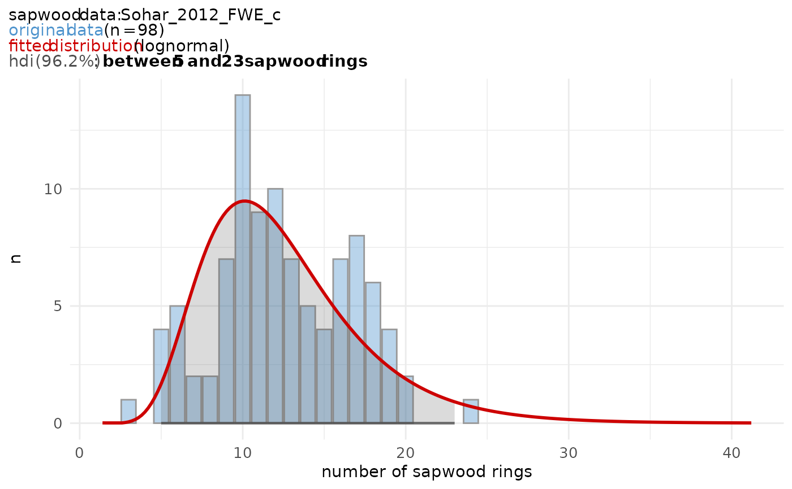

Sapwood data set for Southern Finland and western Estonia, published by Sohar et al. in 2012.
Format
A tibble of 2 variables:
- n_sapwood
number of sapwood rings
- count
number of times n_sapwood was observed
Source
Sohar K., Vitas A. & Läänelaid A. 2012. Sapwood estimates of pedunculate oak (Quercus robur L.) in eastern Baltic, Dendrochronologia 30.1, 49–56. https://doi.org/10.1016/j.dendro.2011.08.001
Examples
sw_data_info("Sohar_2012_FWE_c")
#> $data
#> [1] "Sohar_2012_FWE_c"
#>
#> $citation
#> [1] "Sohar K., Vitas A. & Läänelaid A. 2012. Sapwood estimates of pedunculate oak (Quercus robur L.) in eastern Baltic, Dendrochronologia 30.1, 49–56. DOI: https://doi.org/10.1016/j.dendro.2011.08.001"
#>
#> $area
#> [1] "Southern Finland and western Estonia (sapwood determined by color)."
#>
#> $n_observations
#> [1] 98
#>
#> $summary_raw_data
#> Min. 1st Qu. Median Mean 3rd Qu. Max.
#> 3.00 10.00 12.00 12.47 16.00 24.00
#>
sw_model("Sohar_2012_FWE_c", plot = TRUE)
